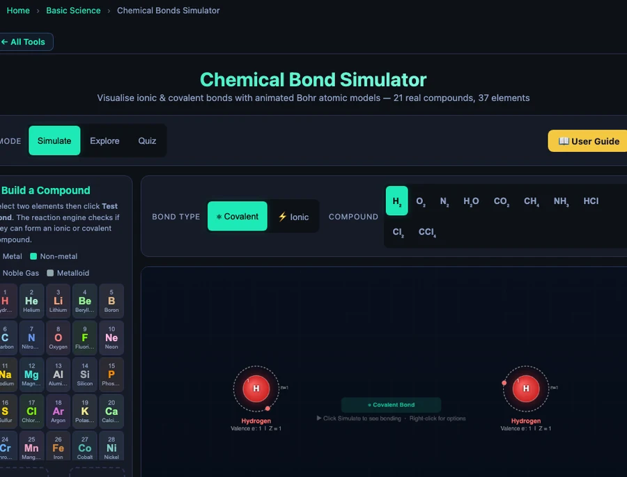

Chemical Bonds Simulator — Ionic vs Covalent Bonding, Electronegativity, and the Octet Rule

- Ionic bonds transfer electrons (one atom takes them from another), while covalent bonds share electrons between atoms; the difference is driven by how strongly each atom attracts electrons.
- Bond type is predicted from the electronegativity difference (ΔEN = EN₁ − EN₂): ΔEN above 1.7 is likely ionic, 0.5–1.7 is polar covalent, and below 0.5 is nonpolar covalent.
- Both bond types follow the octet rule — atoms gain, lose, or share electrons to reach eight in their outer shell, e.g. NaCl (ΔEN = 2.23, ionic) versus H⊂2;O (ΔEN = 1.24, polar covalent).
The Invisible Architecture That Holds Everything Together
Every material you have ever touched — salt crystals, glass, the plastic on your phone, the water in your cup — exists because atoms bond together. The properties of those materials — their melting points, conductivity, solubility, hardness — all trace back to one question: did those atoms give and take electrons, or did they share them? That single distinction separates ionic from covalent bonding, and it underpins virtually every topic in chemistry that follows.
Here is the problem. Most students memorise the rule as “metal plus nonmetal equals ionic; nonmetal plus nonmetal equals covalent.” They can write it on a test and still have no idea why that rule works or what it actually means for the electron arrangement. Ask them why HF is covalent when its electronegativity difference exceeds the ionic threshold, and they’re stuck. Ask them why CO⊂2; is nonpolar despite having polar bonds, and the room goes quiet. The memorised rule hasn’t given them a model — it’s given them a shortcut that breaks as soon as the question gets harder.
The Chemical Bonds Simulator fixes that at the root. Instead of a rule to memorise, it gives students an animated Bohr model they can watch: electrons actually moving, shells filling, charges appearing. This article walks through what the simulator shows, the numbers behind each bond type, and how to use it to build genuine understanding — not just exam answers.
Electronegativity — the One Number That Explains Bond Type
Electronegativity (EN) is the measure of how strongly an atom attracts electrons toward itself in a chemical bond. It was systematised by Linus Pauling, and his scale is still the standard. The values run from caesium at 0.79 (weakest pull) to fluorine at 3.98 (strongest pull). Every element sits somewhere on that scale, and the difference between two bonded atoms determines what kind of bond forms.
\[\Delta EN = EN_{\text{atom\,1}} - EN_{\text{atom\,2}}\]
The simulator uses three zones:
- \(\Delta EN > 1.7\) → likely ionic (electron transfer)
- \(\Delta EN\) between 0.5 and 1.7 → polar covalent (unequal sharing)
- \(\Delta EN < 0.5\) → nonpolar covalent (equal sharing)
These are guidelines, not laws. HF has \(\Delta EN = 3.98 - 2.20 = 1.78\), which technically crosses the ionic threshold — but fluorine is so small and its electrons are so tightly held that sharing still occurs rather than full transfer. BF⊂3; similarly exceeds 1.7 but is covalent. The simulator flags these edge cases explicitly, which is exactly the kind of nuance that separates a student who understands chemistry from one who has only memorised a rule.
Key electronegativity values to keep in mind: F = 3.98, O = 3.44, Cl = 3.16, N = 3.04, C = 2.55, H = 2.20, Mg = 1.31, Li = 0.98, Na = 0.93, K = 0.82.
Ionic Bonds — Electron Transfer and the Crystal Lattice
Ionic bonds form when the electronegativity difference is large enough that one atom simply takes an electron from the other rather than sharing it. The atom that loses an electron becomes a positively charged cation; the atom that gains one becomes a negatively charged anion. These opposite charges attract, pulling the ions into a regular three-dimensional crystal lattice.
The driving force is the octet rule: atoms are most stable with eight electrons in their outermost shell (hydrogen and helium being the exception, needing only two). Sodium has one outer electron — it’s energetically cheaper to give it away and drop back to the filled shell below than to gain seven more. Chlorine has seven outer electrons and needs just one more to complete its octet. The transaction is thermodynamically straightforward.
The LiF Example — Strongest Ionic Character (\(\Delta EN\) = 3.00)
Lithium fluoride is the most extreme ionic compound in the simulator. Fluorine carries an electronegativity of 3.98 — the highest of any element. Lithium sits at 0.98. The difference is 3.00, the largest \(\Delta EN\) of any compound in the preset list. When the Bohr model animates, lithium’s single outer electron is drawn so strongly toward fluorine that transfer is essentially complete: Li becomes Li¹+ with the helium configuration (2 electrons), and F becomes F¹− with the neon configuration (8 electrons in the outer shell). The result is a tightly bound ionic compound used in nuclear reactors and high-performance lithium batteries, where its stable crystal lattice and high melting point are genuine engineering properties, not just textbook abstractions.
NaCl — the Classic Case
Sodium chloride is every student’s first ionic compound — and for good reason. Na (EN = 0.93) has one outer electron. Cl (EN = 3.16) has seven. \(\Delta EN = 2.23\), comfortably above the 1.7 threshold. In the simulator, you watch Na’s outer electron move across to Cl’s shell, both shells snap to a complete configuration, and the charges Na¹+ and Cl¹− appear. In real life, these ions align into a face-centred cubic lattice — the structure that makes table salt crystalline, brittle, and electrically conductive when dissolved. MgCl⊂2; follows the same pattern: Mg loses both outer electrons to become Mg²+, while each of the two chlorine atoms gains one to become Cl¹−.
Covalent Bonds — Sharing Electrons and the Octet Rule
When the electronegativity difference is small, neither atom can pull an electron away outright. Instead, they share one or more pairs of electrons — both nuclei attracting the same electrons, creating a bond that holds them together. Each shared pair counts toward both atoms’ octet, so sharing is an efficient way for nonmetals to achieve stability without the full electron transfer an ionic bond requires.
The number of shared pairs determines the bond order: one shared pair is a single bond, two is a double bond, three is a triple bond. N⊂2; is the textbook triple-bond example — each nitrogen has 5 valence electrons and needs 3 more, so they share 3 pairs. The triple bond is one of the strongest in chemistry, which is why atmospheric nitrogen is so inert.
Nonpolar Covalent — H⊂2; and Cl⊂2;
When two identical atoms bond, the electronegativity difference is exactly 0.00 — perfect sharing. In H⊂2;, both hydrogen atoms carry EN = 2.20. The single shared pair sits symmetrically between the two nuclei, producing the shortest covalent bond in chemistry at just 74 pm. The simulator shows this as a single shared electron pair orbiting both atoms simultaneously, with no partial charges and a \(\Delta EN\) readout of 0.00. Cl⊂2; works the same way: both chlorine atoms at EN = 3.16, \(\Delta EN\) = 0, a single nonpolar bond. These diatomic molecules are the purest illustration of covalent bonding because there is genuinely nothing pulling the shared electrons in any preferred direction.
Polar Covalent — HCl, H⊂2;O, and Partial Charges
Polar covalent bonds are where most misconceptions live. Students understand the idea that electrons are “shared,” but they often assume that means shared equally. In most real molecules, it doesn’t.
HCl: H (EN = 2.20), Cl (EN = 3.16), \(\Delta EN\) = 0.96 → polar covalent. The shared electrons spend more time near chlorine, giving it a partial negative charge (\(\delta^-\)) and leaving hydrogen with a partial positive charge (\(\delta^+\)). The bond is shared but not equal. In water, HCl ionises completely — the bond breaks in the presence of water molecules and produces H¹+ and Cl¹− ions. That ionic behaviour in solution is a direct consequence of the polar character the bond already had.
NH⊂3; illustrates the logic of multiple bonds: nitrogen needs 3 electrons to complete its octet, and each hydrogen needs 1. Three N—H single bonds form, with nitrogen contributing the unshared lone pair that gives ammonia its pyramidal geometry. CH⊂4; follows the same pattern in a different direction: carbon forms 4 single bonds with 4 hydrogen atoms, \(\Delta EN\) = 0.35 (nonpolar), tetrahedral geometry, the basis of all organic chemistry.

Water is the most important polar covalent molecule in chemistry. Oxygen (EN = 3.44) pulls both sets of shared electrons toward itself, creating a significant \(\delta^-\) on the oxygen and \(\delta^+\) on each hydrogen. \(\Delta EN\) = 1.24 — solidly in the polar covalent zone. The bent geometry means the two bond dipoles don’t cancel, making water a strongly polar molecule overall. That polarity is why water dissolves ionic compounds, why it has an unusually high boiling point for its molecular weight, and why it forms hydrogen bonds with itself. All of that starts with the 1.24 electronegativity difference that the simulator puts front and centre.
CO⊂2; is a useful contrast: carbon forms two double bonds with the two oxygen atoms. Each C=O bond is polar (\(\Delta EN\) = 0.89), but the molecule is linear, so the two bond dipoles point in exactly opposite directions and cancel out. CO⊂2; is a nonpolar molecule made of polar bonds — a distinction that confuses students who try to predict polarity from bond polarity alone.
The Build-a-Compound Feature — Testing Any Two of 37 Elements
The 21 preset compounds cover the core curriculum well, but the most powerful tool in the simulator is the Build-a-Compound mode. It gives you a grid of 37 elements. Click any two, then click Test Bond. The simulator’s reaction engine calculates \(\Delta EN\), checks whether the pair can form a stable compound under the octet rule, identifies the expected product formula, and launches the full animated Bohr model.
Try pairing potassium (K, EN = 0.82) with fluorine (F, EN = 3.98): \(\Delta EN\) = 3.16, strongly ionic, animated electron transfer, KF crystal. Now try carbon with oxygen: \(\Delta EN\) = 0.89, polar covalent, double bonds, CO⊂2;. Now try two carbon atoms: \(\Delta EN\) = 0.00, nonpolar covalent, the foundation of organic chemistry. If the pair can’t form a stable compound — say, two noble gas atoms — the simulator explains why, making the boundary cases just as instructive as the clean examples.
This mode turns the simulator into a genuine discovery environment. A student who asks “what happens if I bond the most electronegative element with the least electronegative?” can test it immediately: CsF, \(\Delta EN\) = 3.19, the most ionic character possible. That’s a question a textbook can’t answer interactively.
From Bond Type to Real Properties — Conductivity, Solubility, Melting Point
Understanding bond type isn’t an end in itself — it predicts the macroscopic properties of materials. Ionic compounds (NaCl, LiF, MgCl⊂2;) have high melting points because breaking the crystal lattice requires overcoming strong electrostatic forces between many ion pairs at once. They conduct electricity when dissolved in water or melted because the ions become free to move. They’re brittle because displacing the lattice by one position puts like charges adjacent to each other, causing repulsion and fracture.
Covalent compounds vary enormously. Small nonpolar covalent molecules like H⊂2;, Cl⊂2;, and CH⊂4; have very low melting points because the forces between molecules (van der Waals forces) are weak — even though the bonds within the molecule are strong. Polar covalent molecules like H⊂2;O have higher boiling points than their molecular weight would suggest, because the partial charges create significant intermolecular attraction. Large covalent networks like diamond have extremely high melting points because every atom is covalently bonded to its neighbours throughout the entire solid.
The simulator makes this concrete by displaying, for each compound, whether it conducts electricity and what state it’s typically found in at room temperature — information that connects the microscopic bond model to observable chemistry.
Using the Simulator in the Classroom
The Chemical Bonds Simulator works across three modes: Simulate (animated Bohr models), Explore (concept cards covering bond types, electronegativity, and the octet rule), and Quiz (multiple-choice questions that adapt to what the student has been exploring). Each mode is accessible from the same interface, so moving between them is frictionless mid-lesson.
A high-impact classroom sequence that works in 20 minutes: start with the NaCl animation on the projector and count the electrons before and after the transfer as a class. Then switch to H⊂2; — same animation style, no transfer, just sharing. Ask students to identify the difference they can see. The \(\Delta EN\) readout (2.23 vs 0.00) gives them a number to anchor the contrast. Then open H⊂2;O: \(\Delta EN\) = 1.24. “Is this ionic or covalent? The number is between the two extremes — what does that mean for the electrons?” That question, with the animated partial charges visible on screen, is the moment polar covalent stops being a definition and starts being an idea students own.
For independent work, give students three compound names and ask them to predict the bond type from the electronegativity values before testing in the simulator. The predict-verify structure is where the learning actually sticks — being wrong and then immediately seeing why is more memorable than being told the correct answer from the start.
Try It Yourself
All three simulators are free — no account, no download, works on any device.
Key Takeaways
- Electronegativity difference (\(\Delta EN\)) is the single most useful number for predicting bond type: above 1.7 suggests ionic, 0.5–1.7 is polar covalent, below 0.5 is nonpolar covalent — with real exceptions like HF (\(\Delta EN\) = 1.78) that stay covalent because of atomic size.
- LiF has the largest \(\Delta EN\) of any preset compound in the simulator (3.00 = 3.98 − 0.98), making it the most ionic — used in nuclear reactors and high-performance batteries because of the stability of its crystal lattice.
- NaCl (\(\Delta EN\) = 2.23) shows the classic ionic pattern: Na gives up 1 electron, Cl gains 1, both achieve noble-gas configurations. MgCl⊂2; extends this: Mg loses 2 electrons to form Mg²+, and two Cl atoms each gain one.
- H⊂2;O (\(\Delta EN\) = 1.24) is polar covalent: oxygen pulls the shared electrons toward itself, creating \(\delta^-\) on O and \(\delta^+\) on each H. The resulting molecular polarity explains water’s unusually high boiling point and its ability to dissolve ionic compounds.
- CO⊂2; has polar C=O bonds (\(\Delta EN\) = 0.89) but is a nonpolar molecule because its linear geometry causes the bond dipoles to cancel — a key distinction between bond polarity and molecular polarity.
- The Build-a-Compound mode gives access to 37 elements in any pairing — the reaction engine validates the compound, calculates \(\Delta EN\), and animates the appropriate bond type, making it a discovery tool as well as a teaching aid.
Frequently Asked Questions
What is the difference between ionic and covalent bonds?
Ionic bonds form when one atom transfers one or more electrons to another, creating oppositely charged ions that attract each other. This typically happens between a metal and a nonmetal with a large electronegativity difference (EN diff > 1.7). For example, Na transfers its outer electron to Cl, forming Na¹+ and Cl¹−. Covalent bonds form when two atoms share electrons. This happens between nonmetals with smaller EN differences. In H⊂2;O, oxygen and hydrogen share electrons, but oxygen pulls them closer because it has a higher electronegativity — this is a polar covalent bond.
How does electronegativity determine bond type?
Electronegativity is a measure of how strongly an atom attracts electrons in a bond. Fluorine (3.98) is the most electronegative element; caesium (0.79) among the least. The electronegativity difference (ΔEN) between two bonded atoms determines the bond character: ΔEN > 1.7 suggests ionic character; ΔEN between 0.5 and 1.7 indicates polar covalent; ΔEN below 0.5 is nonpolar covalent. These are useful guidelines rather than strict boundaries — HF has ΔEN = 1.78 but forms a covalent bond because fluorine is so small that electrons are shared rather than fully transferred.
What is the octet rule and when does it apply?
The octet rule states that atoms tend to gain, lose, or share electrons until they have eight electrons in their outermost shell, achieving a stable noble-gas configuration. Sodium (1 outer electron) achieves stability by losing that electron to become Na¹+ (like neon, 8 outer electrons). Chlorine (7 outer electrons) gains one to become Cl¹− (like argon). In covalent molecules, carbon forms four shared bonds in CH⊂4; to achieve an octet. Exceptions include hydrogen and helium (which need only 2), and expanded-octet elements like phosphorus (PCl⊂5;) and sulfur (SF⊂6;) beyond the third period.
What makes LiF the most ionic compound in the simulator?
Lithium fluoride (LiF) has the largest electronegativity difference of any compound in the simulator: F (3.98) − Li (0.98) = 3.00. This extreme difference means fluorine pulls the electron almost completely away from lithium. Li has only one outer electron and loses it readily; F has 7 outer electrons and an intense attraction for one more to reach the neon configuration. The result is a strongly ionic compound used in nuclear reactors and high-performance batteries precisely because its ions are tightly bound in a stable crystal lattice.
How do I use the Build-a-Compound feature in the simulator?
In the simulator’s Simulate mode, you will find an element selector grid containing 37 elements. Click any two elements to place them in the selection slots, then click Test Bond. The reaction engine checks whether the pair can form a valid ionic or covalent compound, calculates the electronegativity difference, identifies the expected product formula (for example, H + O → H⊂2;O), and launches the animated Bohr model showing either electron transfer (ionic) or electron sharing (covalent). If the pair does not form a stable compound, the tool displays a message explaining why — making it a useful tool for exploring the boundaries of the octet rule.
Chemical bonding is one of those topics where the gap between “I can answer the exam question” and “I understand what’s happening” is widest. A student who has only memorised “metal plus nonmetal equals ionic” will be lost the first time they meet a polar covalent bond, a nonpolar molecule with polar bonds, or an edge case like HF. A student who has watched electrons transfer and share in real animated Bohr models, seen the \(\Delta EN\) number change as they switch between compounds, and explored what happens when they pair caesium with fluorine versus carbon with carbon — that student has a model they can reason from, not just a rule they can recite.
Open the Chemical Bonds Simulator and start with LiF — the most extreme case — then work your way toward H⊂2; at the other end of the scale. The pattern between those two extremes is the entire story of chemical bonding.